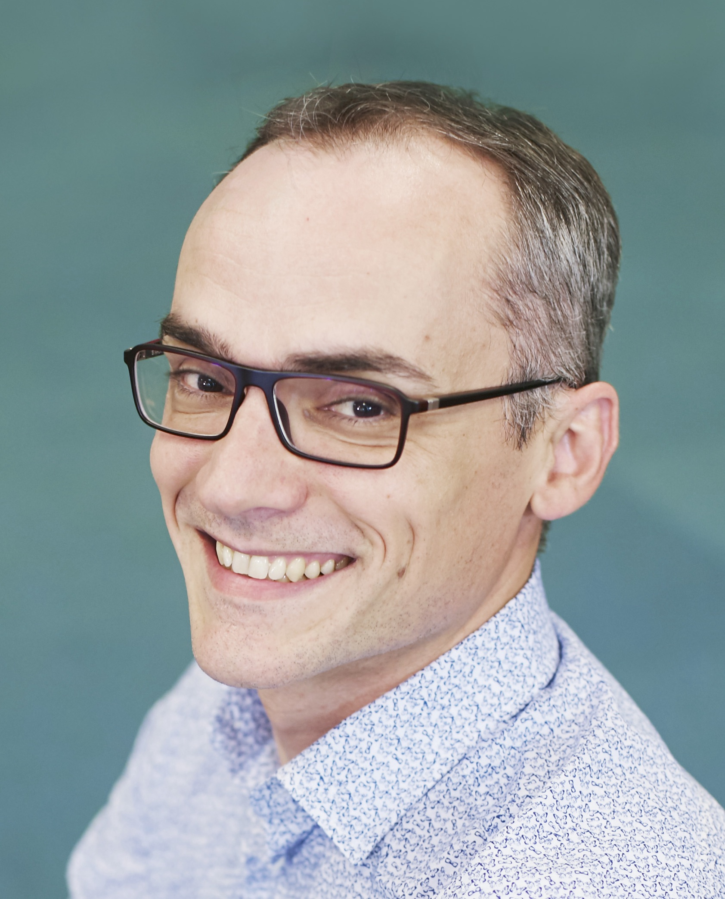

About me
I am a researcher in the Meta company in Paris. I'm in sabbatical leave from my position of professor of Computer Science at
ENS Rennes but I still hold a part-time teaching position there.

I received a Ph.D. in Computer Science from the University of Rennes,
France, in 2005, and a Habilitation à diriger les recherches in
Computer Science from the ENS Cachan, France, in 2012. I joined
ENS Cachan in September 2013 as full professor (in 2014, the brittany extension of ENS Cachan
has becomed ENS Rennes). Between 2007 and 2013, I was a
full research at
INRIA Rennes research center. Earlier, I was
holding a postdoc position at INRIA Sophia-Antipolis under the
supervision of Gilles Barthe. In the 2011-13 academic years, I took
a sabbatical and visited Jan Vitek's group at Purdue University, Indiana, USA, during the first year,
and then Greg Morrisett's group at Harvard University, Cambridge, USA, during the second year.
From 2018 to 2021, my research has been funded by an ERC Consolidator Grant.
My research interests include formal methods, programming languages, program verification, software, and system security.
I am a long time happy user of the Coq proof assistant
and the theory of Abstract interpretation.
I have been conducting several researches about the verified C compiler CompCert in
a recent past.
{kind=link}
Contact
| : | david[dot]pichardie[at]ens-rennes[dot]fr |
Activities
Program committees
- POPL 2023 (PC)
- PriSC 2022 (PC)
- SAS 2020 (co-chair)
- CC 2018 (PC), AVoCS 2018 (co-chair)
- ESORICS 2017 (PC), ESOP 2017 (PC), CC 2017 (PC)
- POPL 2015 (PC)
- ESOP 2014 (PC), FLoC 2014 (ITP workshop chair), ITP 2014 (PC)
- PLDI 2013 (ERC), BYTECODE 2013 (PC), ITP 2013 (co-chair), PxTP 2013 (PC), Coq Workshop 2013 (PC)
- IFM 2012 (PC), ITP 2012 (PC), PxTP 2012 (co-chair), SVARM & VERIFY 2012 (PC)
- JFLA 2011 (PC), BYTECODE 2011 (PC), PxTP 2011 (PC), PSATTT 2011 (PC), FoVeOOS 2011 (PC)
- BYTECODE 2010 (chair), ITP 2010 (PC), VERIFY 2010 (PC), IFM 2010 (PC)
- BYTECODE 2009 (PC), PCC 2009 (PC)
- NordSec'07 (PC)
Lecturing
- DigiCosme Spring School April 2013.
- University courses: I teach static analysis (2006-2015) in the Master research of University Rennes 1, Formal methods for software engineering (2007-2010) at INSA engineering school and Algorithms (2010) and Logic (2008-2009) at ENS Cachan, Brittany extension.
- FOSAD Summer School August, 2009
- Tutorial: Mobility, Ubiquity, and Security at ETAPS'07
- French summer school: EJCP'07
- Types Summer School August 19-31, 2007